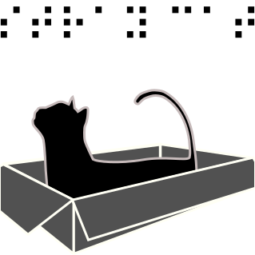

Khanh N. Dang
Hi, my name is Khanh N. Dang and I joined ASLab the Uni. of Aizu as a doctor student in October 2014.
My research? See my publication here: link
My contact? This is my email: d8162103@u-aizu.ac.jp.
Are you boring now? There are some fun things:
- RacingJS (link): a racing game I code on P5js.
- O An Quan (under development) (link): a traditional Vietnamese game (Wikipedia).
- MicroMouse (under development) (link): an animation for MicroMouse game.
- NoC Animation (link): an Processing animation of 2D NoC using XY routing.